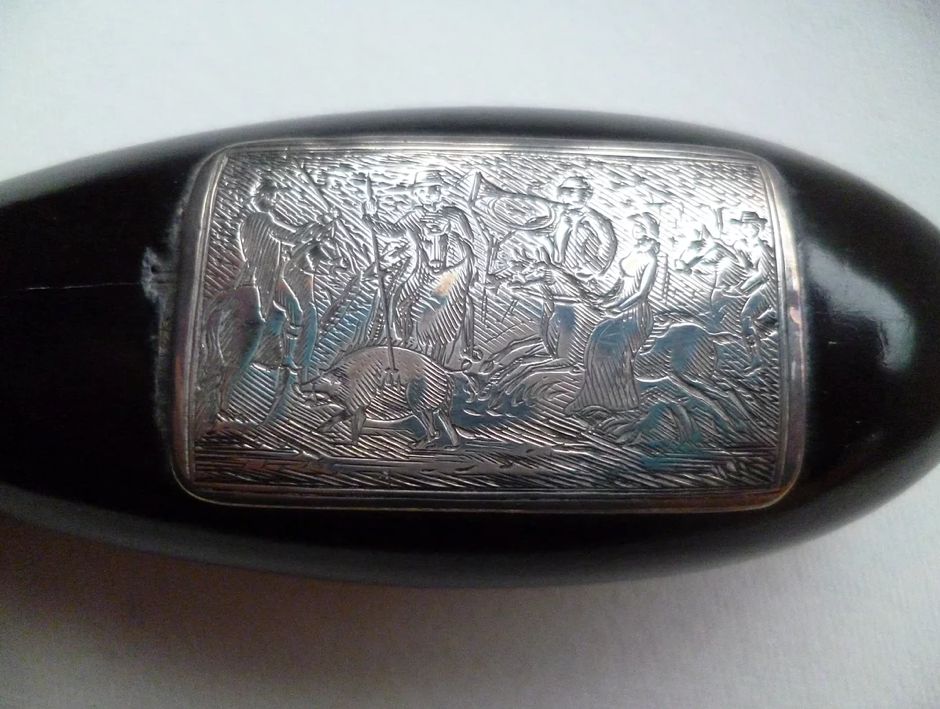
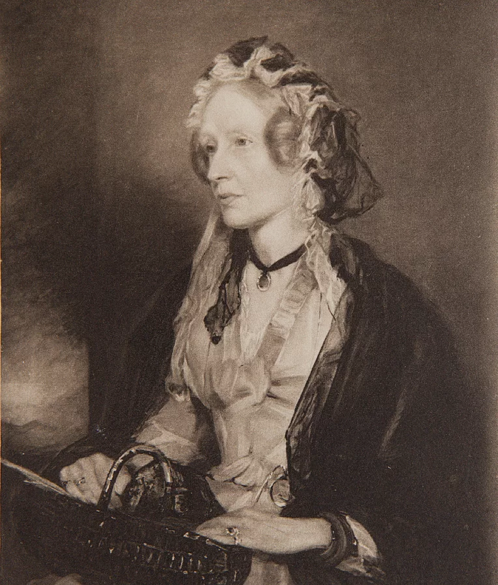
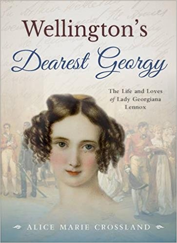

Georgiana de Ros
A small collection of memorabilia and ephemera connected with Arthur Wellesley, the first Duke of Wellington and Georgiana Lennox (de Ros)
Wellingtons peninsular war Prayer book

The Ladies of Llangollen Lady elinor Butler Miss Ponsonby


Wellington's Waistcoat
The Wellington letters
This large collection of letters consisting of 140 in total are written to Georgiana Lennox and after her marriage in 1824 to Lady de Ros. The earliest date is 28th June 1815 and the last is 25 th march 1850. Georgiana lived to the great age of 96 and obviously cherished the memories that these letters gave to her, I don’t think she ever let them out of her possession and her Daughter Blanche did not transcribe the letters until after her death. Georgy from a young age was immensely fond of the Duke and although the content of the letters seem very familiar for this period, there relationship was probably like that of a Father and Daughter. Sadly there are none of Georgy’s letters to the Duke that are known to exist, he was known to suggest destroying all personal correspondence, which he seems to have done, Clearly many of the Duke’s lady friends could not bring themselves to do this, There are large time spans in some of the letters which is perhaps because some were destroyed or they lived close to each other and the need to correspond was less. Strangely none of Georgy’s diaries are known to exist either, however Blanche did copy some of the entries and on hearing of the Duke’s death Georgy wrote: From childhood I loved and venerated him and invariably received the most un-remitting kindness from him and so many years of unclouded friendship cannot be given up without much suffering. Georgy’s husband William Fitzgerald de Ros was burdened with the immense responsibility of organising large parts of the funeral procession of the Duke. The content of the letters are mostly of a social nature and they discuss many of the activities and tricks which The Duke and Georgy seemed to enjoy getting up to and they certainly show a different side to the man Known as The Iron Duke. [Paris Feb 1 1817 I gave a brilliant Ball on the 29th. It wanted you only to be perfect. I want you likewise for another reason. Between ourselves entirely we have been playing the finest trick ever yet performed: and it is unfortunate that so capital an actress as you should be absent on the occasion. We really quite surpassed ourselves and in the best possible way, the way which is my favourite one viz founding our scheme on a fiction invented and circulated by the person on whom the trick was played. We are not yet found out which is fortunate. As you say “it would be a pity if you or I were ever discovered as we are so very innocent”] The Duke also seems to have taken a very keen interest in Georgy’s suitors and referred to them as the enemy. [Mont St Martin Nov 17th 1816 [We have had but bad hunting since you went; but the weather appears to be becoming more favourable and I hope for some sport tomorrow. I have not seen the enemy. I’ll try to get him to come over here for a day or two that I may know him a little.] Which must have been quite frightening for those concerned, Lord Hotham in this case. [Paris Jan 3rd 1817 ; I have received your letter of the 27th and I hope soon to send you some poetry notwithstanding that there is less leisure for writing here than there was at the Abbaye. I hear that a terrible accident happened to the last poem.You are a little witch! You never told me that you had bewitched my secretary! He is going about very poorly! Then there is poor Percy too very poorly for Lady Elizabeth Conynham… I did not ask the soupirant to the Abbaye as he asked to go to Bruxelles.I have a very good opinion of him and wish that you like him. I don’t approve of you waiting for the Caprice of the enemy’s guardian.] She does seem to have had a closeness to Charles Greville the famous diarist and great friend of Henry Fitzgerald who was the elder brother of her future husband. Georgy in turn became very protective of the Duke re his affairs of the heart later in life as he was pursued by many hopeful ladies [Jan 14th 1838 you appear to be anxious about my travels in Staffordshire that I write you one line to tell you that I have evacuated that county in perfect safety! Not having seen or even heard of the enemy.]
The Boars Tail
Georgys amusing story of a Wild Boar hunt. " I used sometimes to ride to cover when there was a boar-hunt and on the 30th october 1817 The Duke Of Wellington killed an enormous boar At Walencourt, of which Feat he was Prouder than of Waterloo! He was very anxious to show me the boar, and I was equally anxious not to see it and Sir George Murray helped me to avoid the unpleasent sight. The Boars Bristles were given to me, and were mounted for me by Lord Arthur Hill A.D.C. to the Duke, with an Inscription. Bristles of a wild boar 7 feet from nose to tail, 4 feet 2 inches in girth, length of head 19 inches: Killed by THE DUKE OF WELLINGTON at WALLENCOURT on 30 th Oct 1817, when I was out hunting with him. Georgiana Lennox The Handle is turned ebony with silver mounts and an engraving of a hunting scene. The exact purpose of this item is not clear.
The Duke's Hair
The collection consists of three lots of hair belonging to the Duke the first was sent to Georgy in a letter as shown not long after the battle of Waterloo and was very likely to have been on his head at the time of the battle and is the earliest example. The second piece has been woven into the top of a small cedar toothpick box which has a small mirror. Inside is a note in Georgy's hand "Hair of Arthur The 1st Great Duke of Wellington. The third piece was given to Georgy by Kendall , The Duke's man servant ,Who after his passing immediately wrote two letters to Georgy informing her of the event, one to her london home and one to Strangford in case she was there. When they met in person shortly afterwards Kendall gave her an envelope with a small lock of the Duke's hair he is also supposed to have sent a piece to Queen Victoria.
General Miguel de Alava
General Miguel de Alava was a great friend of the Duke and was with him at waterloo he gave her this very pretty engraved mother of pearl gilt bound Diary notebook to Georgy in 1817.
Napoleons Anchor
The attached note states. "This anchor belonged to a model of the flat bottomed boats for the invasion of England, which always stood on Napoleons own writing table at Malmaison" The Flat bottomed boats were a design of floating platform built for the invasion of England.How this came to the collection is uncertain as yet but possibly the Duke was presented with it or aquired it and Georgy persuaded him to give it to her.
Portraits and Prints
Miniature of the Duke of Wellington enamel on copper after Sir T. Lawrence inscribed on the reverse, WELLINGTON Painted by W. Essex 1838 Enamel painter to the queen size 11.5 cm X 9.6 cm Miniature on Ivory of the Duke of Wellington This is very simiiar to the many Rochard miniatures painted in Brussels in1815 but is unsigned and undated there is some letters on the outer edge but the history of this version is as yet unknown. Miniature enamel on copper of Georgy as a young lady Artist unknown The original miniature given to Georgy at the Ball on the 15th June 1815.The Image has been kindly sent by the present Owner. Pastel of Georgy aged 96 by Countess Feodora Gleichen in 1891.  Print of Georgy the original painting was by James Rannie Swinton a 19th century portrait artist who was married to her daughter Blanche arthur georgina de Ros William de Ros by Fricero Georgy's son DudleySilver Entree Dishes
This silver entree dishe by Robert Garrard was a wedding present from the Duke of Wellington in 1824 when Georgy at the grand old age of 29 married William Fitzgerald de Ros a young army officer
The Duke's scissors
After the Duke's death William de Ros was invited to Strathfield Saye by the 2nd Duke of Wellington to chose some momento from the Duke's personal belongings.He chose the scissors shown below and the note states, "always used by the great Duke and given by his son to William Lord de Ros," and are engraved with the words "Given to Lord de Ros by the present Duke from the Duke of wellingtons writing table 1852."
Mourning Pin
This mourning or stick pin shows a profile of the Duke and is inscribed with the words "In arms invincible - in council true." It is gilt and enamelled. Stick pins were worn by 19th century gentlemen for fixing through their ties or cravats to keep everything neat and tidy. How this came to the collection is not clear at present, It may have been the Duke's and given to Georgiana or Georgiana maybe had it made after the Dukes Death, It is possibly a hat pin as these tended to be longer than Stick pins.
Items For Sale
The above is a giclee print of the miniature by William Essex 1838 the outside measurments of the frame are 10 " X 8.5" approx. On the reverse is a copy of a letter written to Georgy from the Duke a few weeks after the battle of Waterloo which reads Dearest Georgy I received your letter of the 27th and I now send you a bit of my precious hair. A small piece of the original hair sent to Georgy in the original letter is fixed under the clear disk,It is very probable that this hair was on the Duke's head during the battle,. A print of a miniature of Georgy is positioned top left and the wax impression bottom right is made with a silver seal from the 14th century , Details of the seals discovery and its gift to Georgy's son Dudley make a great story written by Blanche see below. All Profits from the sale of the items listed here will go towards the conservation and restoration of the collection and the maintanance of the website
Buy the Book
Wellington and Georgy always maintained a lively correspondence, unfortunately Wellington destroyed all of Georgy's letters to him. Author Alice-Marie Crossland has piecied back together their relationship and the interesting story of Georgy's life from the fragments of their correspondence still in the de Ros family Archive. The book is entitled Wellington's Dearest Georgy: The life and loves of lady Georgiana Lennox
Buy the Book from Amazon Contact Us
Thank you for showing an interest in the website Unfortunantly due to pressures of time we might not be able to respond to all e-mails however any comments or suggested improvments will be taken on board. georgiana-deros@outlook.com